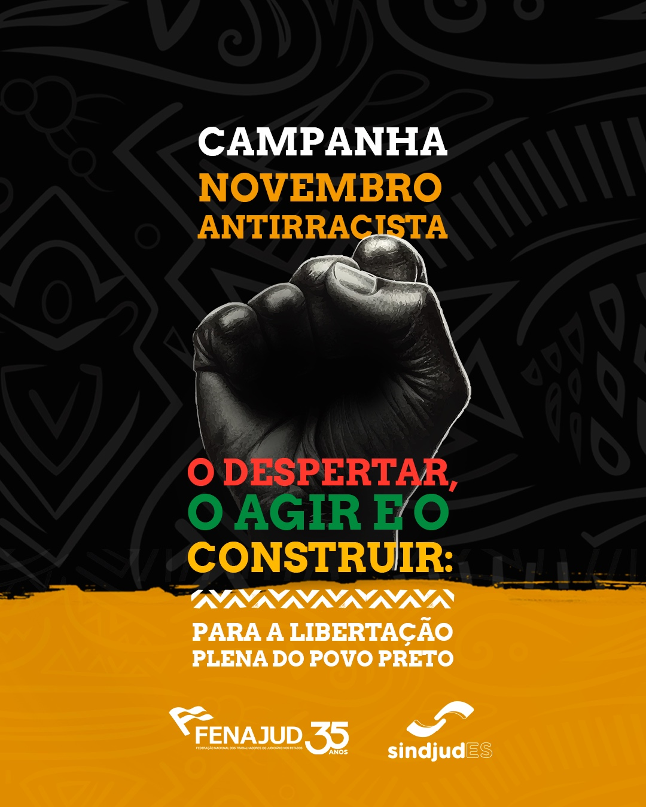

Novembro Preto
Saiba mais sobre o assunto!
Origem
O Dia da Consciência Negra, comemorado em 20 de novembro, surgiu a partir da escolha dessa data para homenagear Zumbi dos Palmares, líder do Quilombo dos Palmares, que morreu nesse dia em 1695. A data foi oficializada em 2011, mas a sua origem remonta aos anos 1970, quando jovens universitários negros idealizaram a data.

Campanhas
A campanha Novembro Negro é uma mobilização para lembrar e dar visibilidade às lutas e resistências da população negra contra o racismo, a discriminação racial, o preconceito e as desigualdades sociais.
.jpg)
Participe você também
Data de postagem, April 7, 2014
Este ano o mês será lembrando na UFCAT no âmbito das ações do “Novembro Preto”, promovido pela Comissão de Heteroidentificação (COMPAD) que terá como tema: “Cotas étnico-raciais: conhecer para defender”, ação que conta com apoio e colaboração de muitas parceiras e parceiros. Para iniciar este mês e convidar a toda a comunidade acadêmica a dialogar conosco, preparamos algumas perguntas e respostas com questões que são fundamentais para iniciarmos as reflexões que propomos, que tem por objetivo sensibilizar a comunidade para a importância das cotas étnico-raciais.
Mais conteúdos sobre o assunto
-

Fenajud lança campanha Novembro Antirracista: na luta pela igualdade e contra o racismo estrutural
https://www.sindjud.com.br/fenajud-lanca-campanha-novembro-antirracista-na-luta-pela-igualdade-e-contra-o-racismo-estrutural/ -
 Novembro: mês da consciência negra.
Novembro: mês da consciência negra.
https://www.ufrb.edu.br/bibliotecacetens/noticias/189-novembro-negro -
‘Nosso papel é cuidar do povo’: MIR aposta em políticas continuadas para novembro negro
https://almapreta.com.br/sessao/politica/nosso-papel-e-cuidar-do-povo-mir-aposta-em-politicas-continuadas-para-novembro-negro/
Palavras-chaves
Novembro Preto Consciência Campanhas novembro Importância Diversidade Racial Origem Valorização Organização Negros Cultura Igualdade Preto Dia 20